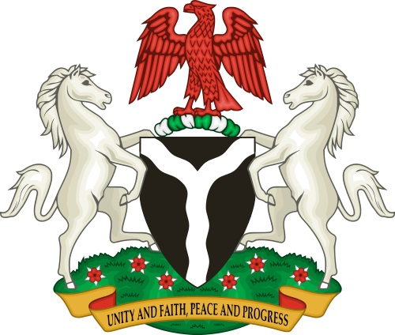

ARMS OF GOVERNMENT
The federal government of Nigeria is composed of three distinct branches: legislative, executive, and judicial, whose powers are vested by the Constitution of Nigeria in the National Assembly, the President, and the federal courts, including the Supreme Court, respectively. Nigeria is a federal republic, with executive power exercised by the president. The president is the head of state, the head of government, and the head of a multi-party system. Nigerian politics takes place within a framework of a federal, presidential, representative democratic republic, in which executive power is exercised by the government.
TYPES OF ARM OF GOVERNMENT
- legislative
- judiciary
- executive
- Legislative arm of government
- The first and foremost function of a legislature is to legislate i.e. to make laws. In ancient times, laws used to be either derived from customs, traditions and religious scriptures, or were issued by the kings as their commands.
- It is the legislature which formulates the will of the state into laws and gives it a legal character. Legislature transforms the demands of the people into authoritative laws/statutes.
- it is duty of the legislature to check the activities of the other organs of the government by the power of setting up panels to investigate the activities of any department of the government.
- Executive arm of government
- The executive branch carries out and enforces laws. It includes the president, vice president, the Cabinet, executive departments, independent agencies, and other.
- The President is the head of the Armed Forces. This arm of government carries on ceremonial functions as well in representation of the state.
- It is the responsibility of the executive to decide as to which treaties are to be signed with which other countries. The executive negotiates the treaties in accordance with the procedure defined by international law and also in accordance with the provisions of the constitution of the state.
- Judiciary arm of government
- One of the major functions of the judiciary is to interpret and apply laws to specific cases. In the course of deciding the disputes that come before it, the judges interpret and apply laws.
- The decisions given by the courts really determine the meaning, nature and scope of the laws passed by the legislature. The interpretation of laws by the judiciary amounts to law-making as it is these interpretations which really define the laws.
- Where a law is silent or ambiguous, or appears to be inconsistent with some other law of the land, the judges depend upon their sense of justice, fairness, impartiality, honesty and wisdom for deciding the cases.